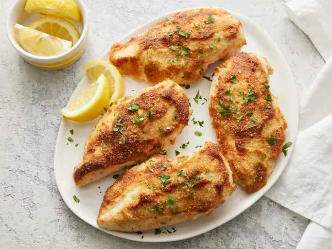

Easy Parmesan-Crusted Chicken

Description
Delicious flavor and crunchy texture.
Prep Time: 10 mins
Cook Time: 20mins
Total Time: 30mins
Servings: 4
Ingredients
- 1/2 cup Mayonnaise
- 1/4 cup grated Parmesan cheese
- 4 (5 ounce) boneless, skinless chicken
- 4 teaspoons Italian-seasoned dry bread crumbs
Steps to follow
-
Gather all ingredients
-
Preheat the oven 425º F (220º C). Line a rimmed baking sheet with parchment paper.
-
Mix mayonnaise and Parmesan together in a medium bowl until well combined.
-
Arrange chicken on the prepared baking sheet. Spread mayonnaise mixture over top, then top with bread
crumbs.
-
Cook in the preheated oven until chicken is no longer pink in the center and the juices run clear, about 20
minutes. an instant-read thermometer inserted into the center should read at least 165º F (74º C).
Recipe Tips
You can substitute light or cholesterol-free mayonnaise and omit Parmesan completely.
To save time, use thin-cut chicken breasts. Prepare as directed, but decrease bake time to about 10 minutes.
Instant-read thermometer results should be the same.
Nutrition Facts(per serving)
367 calories
23g Fat
2g Carbs
35g Protein
Back to home page